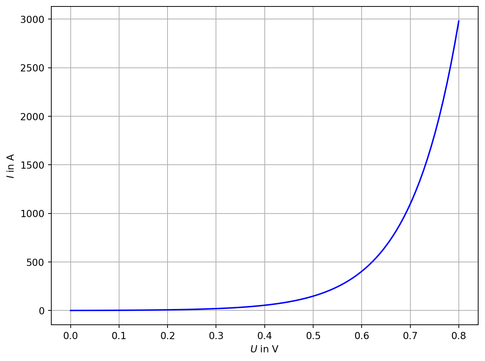

1 Korrekte Schreibweise
Hier finden Sie eine Zusammenfassung über die korrekte Schreibweise von physikalischen Größen, Einheiten und Zahlenwerten wie sie aktuell in den gängigen Normen festgelegt ist:
Austrian Standards
BIPM - International Bureau of Weights and Measures – SI Brochure
ÖNORM EN ISO 80000-1
Weiterführende Links:
Rhode und Schwarz
Größensymbole werden kursiv geschrieben:
\(F\) … Kraft
\(m\) … Masse
\(t\) … Zeit
\(E\) … Energie
\(P\) … Leistung
\(U\) … Spannung
\(I\) … StromstärkeEinheiten werden nicht kursiv geschrieben:
\(\mathrm{N}\) … Newton
\(\mathrm{m}\) … Meter
\(\mathrm{s}\) … Sekunde
\(\mathrm{J}\) … Joule
\(\mathrm{W}\) … Watt
\(\mathrm{V}\) … Volt
\(\mathrm{A}\) … Ampere
Einheiten stehen NIEMALS in eckigen Klammern!!Zahlenwerte und Einheiten werden immer mit einem Leerzeichen voneinander getrennt:
\(5 \ \mathrm{m}\)
\(5 \ \mathrm{m/s}\)
\(5 \ \mathrm{°C}\)Tabellenbeschriftungen sind normgerecht wie folgt auszuführen:
| \(I\) in \(\mathrm{A}\) | \(U\) in \(\mathrm{V}\) | \(P\) in \(\mathrm{W}\) | \(t\) in \(\mathrm{s}\) | \(E\) in \(\mathrm{J}\) |
|---|---|---|---|---|
- Diagramme sind normgerecht wie folgt zu beschriften:
- Einheitenvorsätze sind teil der Einheit und werden nicht kursiv geschrieben:
\(\mathrm{f}\) … Femto \(10^{-15}\)
\(\mathrm{n}\) … Nano \(10^{-9}\)
\(\mathrm{µ}\) … Mikro \(10^{-6}\)
\(\mathrm{m}\) … Milli \(10^{-3}\)
\(\mathrm{k}\) … kilo \(10^{3}\)
\(\mathrm{M}\) … Mega \(10^{6}\)
\(\mathrm{G}\) … Giga \(10^{9}\)
\(\mathrm{T}\) … Tera \(10^{12}\)
\(\mathrm{P}\) … Peta \(10^{15}\)
\(\mathrm{E}\) … Exa \(10^{18}\)
\(\mathrm{Z}\) … Zetta \(10^{21}\)
\(\mathrm{Y}\) … Yotta \(10^{24}\)
Der Exponent ändert sich immer um 3.
dezi, hekto, centi, deka sind keine SI Einheitenvorsätze und werden nicht verwendet.
Eine Zahlenwert mit Einheit und Einheitenvorsatz wird wie folgt geschrieben:
\(5 \ \mathrm{mV}\) … fünf Millivolt
2 Energie
Energie ist die Fähigkeit, Arbeit zu verrichten oder Wärme zu erzeugen. Sie kann in verschiedenen Formen vorkommen, z. B. als mechanische, thermische, elektrische, chemische oder kinetische Energie. Energie ist eine Erhaltungsgröße, das heißt, sie kann weder erzeugt noch vernichtet, sondern nur von einer Form in eine andere umgewandelt werden. Die Einheit der Energie im internationalen Einheitensystem (SI) ist das Joule J.
2.1 Elektrische Energie
Die elektrische Energie ist die Energie, die durch die Bewegung elektrischer Ladungen (Strom) in einem elektrischen Feld übertragen wird. Sie hängt von der Spannung \(U\), dem Strom \(I\) und der Zeit \(t\) ab.
Formel: \(E_{\text{elektrisch}} = U \cdot I \cdot t\)
- \(E_{\text{elektrisch}}\) ist die elektrische Energie in Joule J.
- \(U\) ist die Spannung in Volt V.
- \(I\) ist der Strom in Ampere A.
- \(t\) ist die Zeit in Sekunden s.
2.2 Kinetische Energie
Die kinetische Energie beschreibt die Energie, die ein Objekt aufgrund seiner Bewegung besitzt. Sie hängt von der Masse \(m\) und der Geschwindigkeit \(v\) ab.
Formel: \(E_{\text{kinetisch}} = \frac{1}{2} m \cdot v^2\)
- \(E_{\text{kinetisch}}\) ist die kinetische Energie in Joule J.
- \(m\) ist die Masse in Kilogramm kg.
- \(v\) ist die Geschwindigkeit in Metern pro Sekunde m/s.
2.3 Potentielle Energie
Die potentielle Energie (auch Lageenergie genannt) ist die Energie, die ein Objekt aufgrund seiner Position in einem Gravitationsfeld besitzt, z. B. wenn es sich in einer gewissen Höhe über dem Boden befindet.
Formel: \(E_{\text{potentiell}} = m \cdot g \cdot h\)
- \(E_{\text{potentiell}}\) ist die potentielle Energie in Joule J.
- \(m\) ist die Masse in Kilogramm kg.
- \(g\) ist die Erdbeschleunigung (etwa \(9{,}81 \, \text{m/s}^2\)).
- \(h\) ist die Höhe in Metern m.
2.4 Chemische Energie
Die chemische Energie am Beispiel Benzin wird durch die Verbrennung freigesetzt und kann in mechanische oder thermische Energie umgewandelt werden. Die Menge an chemischer Energie hängt von der Masse des verbrannten Benzins und seinem Brennwert ab, der bei etwa \(44 \, \text{MJ/kg}\) liegt.
Formel: \(E_{\text{chemisch}} = m_{\text{Benzin}} \cdot \Delta H_{\text{Brennwert}}\)
- \(E_{\text{chemisch}}\) ist die chemische Energie in Joule J.
- \(m_{\text{Benzin}}\) ist die Masse des verbrannten Benzins in Kilogramm kg.
- \(\Delta H_{\text{Brennwert}}\) ist der Brennwert von Benzin in Joule pro Kilogramm, etwa \(44 \, \text{MJ/kg}\).
Jede dieser Energieformen beschreibt eine andere Art der Energieübertragung oder -speicherung, die in verschiedenen physikalischen und chemischen Prozessen eine Rolle spielt.
3 Leistung
Leistung ist eine physikalische Größe, die beschreibt, wie viel Energie pro Zeiteinheit übertragen oder umgewandelt wird. Sie gibt an, wie schnell Arbeit verrichtet wird oder wie schnell Energie in eine andere Form umgewandelt wird.
Die Einheit der Leistung im Internationalen Einheitensystem (SI) ist das Watt W. Ein Watt entspricht einem Joule pro Sekunde:
\(1 \, \text{W} = 1 \, \text{J/s}\)
3.1 Allgemeine Formel für Leistung
Die allgemeine Formel zur Berechnung der Leistung \(P\) lautet:
\(P = \frac{E}{t}\)
- \(P\) ist die Leistung in Watt (W).
- \(E\) ist die Energie in Joule (J).
- \(t\) ist die Zeit in Sekunden (s).
3.2 Elektrische Leistung
In elektrischen Systemen hängt die Leistung von der Spannung \(U\) und dem Strom \(I\) ab. Die Formel für die elektrische Leistung ist:
\(P = U \cdot I\)
- \(P\) ist die elektrische Leistung in Watt (W).
- \(U\) ist die Spannung in Volt (V).
- \(I\) ist der Strom in Ampere (A).
3.3 Mechanische Leistung
Die mechanische Leistung beschreibt die Arbeit, die pro Zeit verrichtet wird, wenn eine Kraft auf ein Objekt wirkt und dieses sich dabei bewegt. Die Formel lautet:
\(P = F \cdot v\)
- \(P\) ist die mechanische Leistung in Watt (W).
- \(F\) ist die Kraft in Newton (N).
- \(v\) ist die Geschwindigkeit in Metern pro Sekunde (m/s).
Alternativ kann die mechanische Leistung auch als verrichtete Arbeit \(W\) pro Zeit \(t\) berechnet werden:
\(P = \frac{W}{t}\)
- \(W\) ist die Arbeit in Joule (J).
3.4 Beispiel:
Wenn ein elektrisches Gerät eine Leistung von \(100 \, \text{W}\) benötigt, bedeutet das, dass es pro Sekunde \(100 \, \text{J}\) Energie verbraucht. Wenn das Gerät in einer Stunde läuft:
\(E = P \cdot t = 100 \, \text{W} \cdot 3600 \, \text{s} = 360 \, \text{kJ}\)
Das Gerät hat in einer Stunde 360 Kilojoule Energie verbraucht. In der elektrotechnik ist es gängig die Energie in Kilowattstunden \(\mathrm{kWh}\) anzugeben.
3.5 Fazit:
- Leistung gibt an, wie schnell Energie umgewandelt oder Arbeit verrichtet wird.
- Sie wird in Watt (W) gemessen und ist die Energie pro Zeiteinheit.
- Je größer die Leistung, desto schneller wird Energie in eine andere Form umgewandelt oder Arbeit verrichtet.
4 Wirkungsgrad
In vielen praktischen Anwendungen wird nicht die gesamte zugeführte Energie in nutzbare Energie umgewandelt. Ein Teil geht oft als Wärme oder Reibung verloren. Der Wirkungsgrad \(\eta\) beschreibt das Verhältnis von nutzbarer Energie \(E_{\text{nutz}}\) zur zugeführten Energie \(E_{\text{zu}}\):
\(\eta = \frac{E_{\text{nutz}}}{E_{\text{zu}}}\)
- \(\eta\) ist der Wirkungsgrad (eine dimensionslose Zahl zwischen 0 und 1 oder in Prozent).
- \(E_{\text{nutz}}\) ist die nutzbare Energie.
- \(E_{\text{zu}}\) ist die zugeführte Energie.
4.1 Beispiel Batterie
Der Wirkungsgrad einer Batterie beschreibt, wie effizient die Batterie die zugeführte Energie in nutzbare elektrische Energie umwandelt. Er wird berechnet als das Verhältnis der abgegebenen Energie zur aufgenommenen Energie während des Lade- und Entladevorgangs.
Der Wirkungsgrad \(\eta\) einer Batterie lässt sich mit folgender Formel berechnen:
\(\eta = \frac{E_{\text{abgegeben}}}{E_{\text{aufgenommen}}}\)
- \(\eta\) ist der Wirkungsgrad (dimensionslos oder in Prozent).
- \(E_{\text{abgegeben}}\) ist die während des Entladevorgangs abgegebene Energie in Joule \(J\) (oder in Wattstunden \(\text{Wh}\)).
- \(E_{\text{aufgenommen}}\) ist die während des Ladevorgangs aufgenommene Energie in Joule \(J\) (oder in Wattstunden \(\text{Wh}\)).
Der Wirkungsgrad ist oft kleiner als 1 (oder 100 %), da während des Ladevorgangs Energieverluste durch Wärme, chemische Prozesse und Selbstentladung auftreten.
4.2 Leistungsbasierter Wirkungsgrad
Wird Energie ohne Zeitverzögerung umgewandelt, kürzt sich die Zeit aus der obigen Gleichung und der Wirkungsgrad kann auch als Verhältnis der nutzbaren Leistung zur zugeführten Leistung berechnet werden:
\(\eta = \frac{P_{\text{nutz}}}{P_{\text{zu}}}\)
5 Beispiele
Warning
Hier hat die KI Fehler eingebaut! Finden Sie die Fehler und korrigieren Sie sie.
- Ein Elektromotor hat eine Leistung von \(1 \, \text{kW}\) und einen Wirkungsgrad von \(80 \%\). Wie viel mechanische Leistung wird tatsächlich erzeugt?
\(P_{\text{mech}} = P_{\text{elektr}} \cdot \eta = 1 \, \text{kW} \cdot 0{,}8 = 800 \, \text{W} = 0{,}8 \, \text{kW}\)
- Ein Auto mit einem Wirkungsgrad von \(25 \%\) verbraucht \(10 \, \text{l}\) Benzin. Wie viel chemische Energie wird tatsächlich in mechanische Energie umgewandelt?
\(E_{\text{chem}} = m_{\text{Benzin}} \cdot \Delta H_{\text{Brennwert}} = 10 \, \text{l} \cdot 0{,}75 \, \text{kg/l} \cdot 44 \, \text{MJ/kg} = 330 \, \text{MJ}\)
\(E_{\text{mech}} = E_{\text{chem}} \cdot \eta = 330 \, \text{MJ} \cdot 0{,}25 = 82{,}5 \, \text{MJ}\)
- Ein Wasserkraftwerk erzeugt \(1 \, \text{MW}\) elektrische Leistung. Wie viel mechanische Leistung wird benötigt, wenn der Wirkungsgrad \(90 \%\) beträgt?
\(P_{\text{mech}} = \frac{P_{\text{elektr}}}{\eta} = \frac{1 \, \text{MW}}{0,9} = 1,11 \ \mathrm{MW}\)
Wie viel Liter Benzin kann ein Auto mit einer mechanischen Leistung von \(100 \, \text{kW}\) und einem Wirkungsgrad von \(30 \%\) in einer Stunde verbrauchen?
Ein Elektroauto hat eine Batterie mit einer Kapazität von \(50 \, \text{kWh}\). Wie viel Energie steht für den Antrieb zur Verfügung, wenn der Wirkungsgrad des Antriebs \(80 \%\) beträgt?
\(E_{\text{elektr}} = E_{\text{chem}} \cdot \eta = 50 \, \text{kWh} \cdot 0{,}8 = 40 \, \text{kWh}\)
Das Elektroauto kann mit einer vollen Batterie etwa \(40 \, \text{kWh}\) Energie für den Antrieb nutzen.
6 CO2 Emissionen
Die CO2-Emissionen sind ein wichtiger Indikator für den Umweltschutz und die Nachhaltigkeit. Sie geben an, wie viel Kohlendioxid (CO2) bei der Verbrennung fossiler Brennstoffe freigesetzt wird. Kohlendioxid ist ein Treibhausgas, das zum Klimawandel beiträgt und die globale Erwärmung verstärkt.
Die CO2-Emissionen werden in Tonnen CO2-Äquivalent gemessen, wobei auch andere Treibhausgase wie Methan (CH4) und Lachgas (N2O) berücksichtigt werden. Die CO2-Emissionen hängen von der Menge und Art des verbrannten Brennstoffs ab, z. B. Kohle, Erdgas, Benzin oder Diesel.
6.1 Berechnung der CO2-Emissionen
Die CO2-Emissionen können aus der Menge des verbrannten Brennstoffs und dem CO2-Ausstoß pro Energieeinheit berechnet werden. Der CO2-Ausstoß wird in Kilogramm CO2 pro Kilowattstunde (kg CO2/kWh) oder Kilogramm CO2 pro Liter (kg CO2/l) angegeben.
Die CO2-Emissionen lassen sich mit folgender Formel berechnen:
\(Em_{\text{CO2}} = m_{\text{Brennstoff}} \cdot \text{CO2-Ausstoß}\)
- \(E_{\text{CO2}}\) sind die CO2-Emissionen in Tonnen CO2-Äquivalent.
- \(m_{\text{Brennstoff}}\) ist die Menge des verbrannten Brennstoffs in Tonnen oder Litern.
- \(\text{CO2-Ausstoß}\) ist der CO2-Ausstoß pro Energieeinheit in Kilogramm CO2 pro Kilowattstunde oder Liter.
6.2 Beispiel
Ein Auto verbraucht \(10 \, \text{l}\) Benzin pro 100 km und hat einen CO2-Ausstoß von \(2{,}3 \, \text{kg/l}\). Wie viel CO2 wird bei einer Fahrt von \(500 \, \text{km}\) ausgestoßen?
\(Em_{\text{CO2}} = m_{\text{Benzin}} \cdot \text{CO2-Ausstoß} = 10 \, \text{l} \cdot 2{,}3 \, \text{kg/l} = 23 \, \text{kg}\) \(Em_{\text{CO2}} = 23 \, \text{kg} = 0{,}023 \, \text{t}\) \(Em_{\text{CO2}} = 0{,}023 \, \text{t} \cdot 5 = 0{,}115 \, \text{t}\) Bei einer Fahrt von \(500 \, \text{km}\) werden \(0{,}115 \, \text{t}\) CO2 ausgestoßen.
7 CO2 Emissionen in der Produktion
Auch in der Produktion von Gütern und Dienstleistungen entstehen CO2-Emissionen. Diese werden als indirekte Emissionen bezeichnet, da sie nicht direkt durch den Endverbraucher verursacht werden, sondern durch die Herstellung und Lieferung der Produkte.
Die CO2-Emissionen in der Produktion hängen von verschiedenen Faktoren ab, z. B. dem Energieverbrauch, der Art der verwendeten Materialien und dem Transport der Produkte. Um die Umweltbelastung zu reduzieren, ist es wichtig, die CO2-Emissionen in der Produktion zu minimieren und nachhaltige Produktionsmethoden zu fördern.
7.1 Berechnung der CO2-Emissionen in der Produktion
Die CO2-Emissionen in der Produktion können aus dem Energieverbrauch und den verwendeten Materialien berechnet werden. Der CO2-Ausstoß wird in Kilogramm CO2 pro Kilowattstunde (kg CO2/kWh) oder Kilogramm CO2 pro Kilogramm Material (kg CO2/kg) angegeben.
Die CO2-Emissionen lassen sich mit folgender Formel berechnen:
\(Em_{\text{CO2}} = Em_{\text{Energie}} + Em_{\text{Material}}\)
- \(Em_{\text{CO2}}\) sind die CO2-Emissionen in Tonnen CO2-Äquivalent.
- \(Em_{\text{Energie}}\) ist der CO2-Ausstoß durch den Energieverbrauch in Tonnen CO2-Äquivalent.
- \(Em_{\text{Material}}\) ist der CO2-Ausstoß durch die verwendeten Materialien in Tonnen CO2-Äquivalent.
7.2 Beispiel
Ein Unternehmen verbraucht \(100 \, \text{MWh}\) elektrische Energie pro Jahr und hat einen CO2-Ausstoß von \(0{,}5 \, \text{kg/kWh}\). Die verwendeten Materialien haben einen CO2-Ausstoß von $0{,}2 , . Wie hoch sind die CO2-Emissionen des Unternehmens pro Jahr?
\(Em_{\text{Energie}} = Em_{\text{elektr}} \cdot \text{CO2-Ausstoß} = 100 \, \text{MWh} \cdot 0{,}5 \, \text{kg/kWh} = 50 \, \text{t}\) \(Em_{\text{Material}} = m_{\text{Material}} \cdot \text{CO2-Ausstoß} = 100 \, \text{kg} \cdot 0{,}2 \, \text{kg/kg} = 20 \, \text{kg}\) \(Em_{\text{CO2}} = Em_{\text{Energie}} + Em_{\text{Material}} = 50 \, \text{t} + 20 \, \text{kg} = 70 \, \text{t}\)
Das Unternehmen verursacht pro Jahr \(70 \, \text{t}\) CO2-Emissionen.
8 Fazit
Die Schwierigkeit bei der Berechnung der CO2-Emissionen liegt darin, alle relevanten Faktoren zu berücksichtigen und die genauen Daten zu erheben. Durch diese Schwierigkeiten und die Vielzahl von Einflussfaktoren kann es zu Abweichungen in den Ergebnissen kommen. Die von den jeweiligen Aktoren gerne zu Ihrem Vorteil ausgelegt werden.